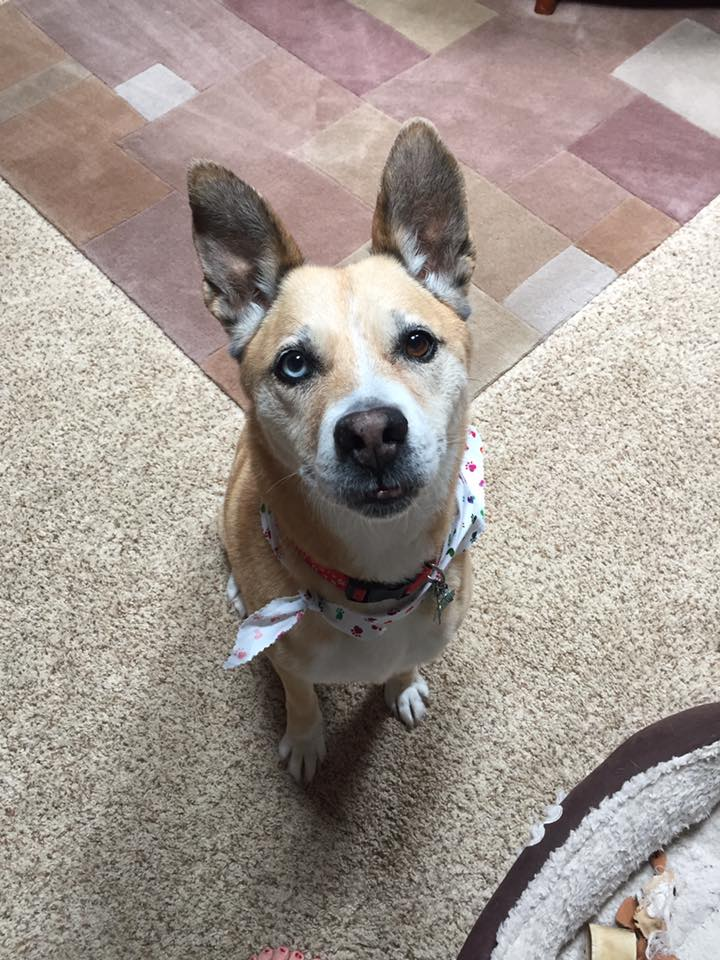
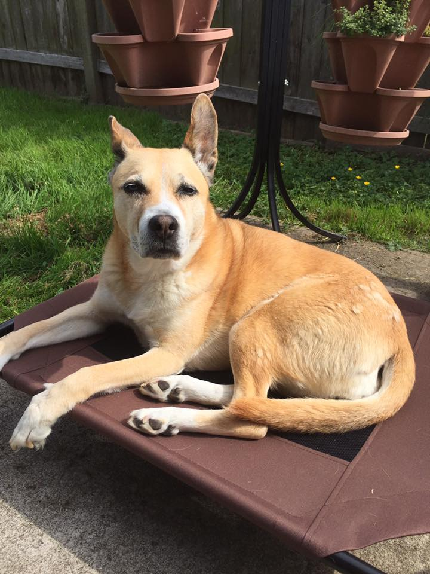
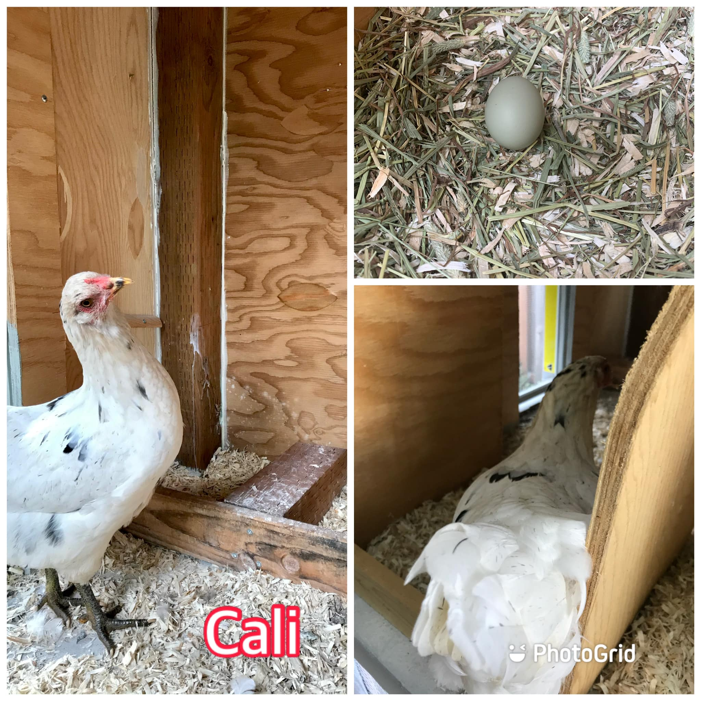
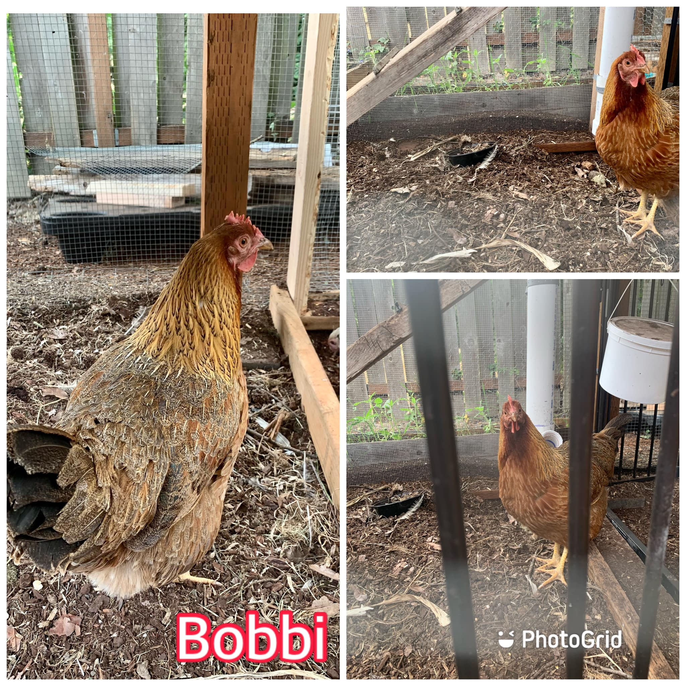
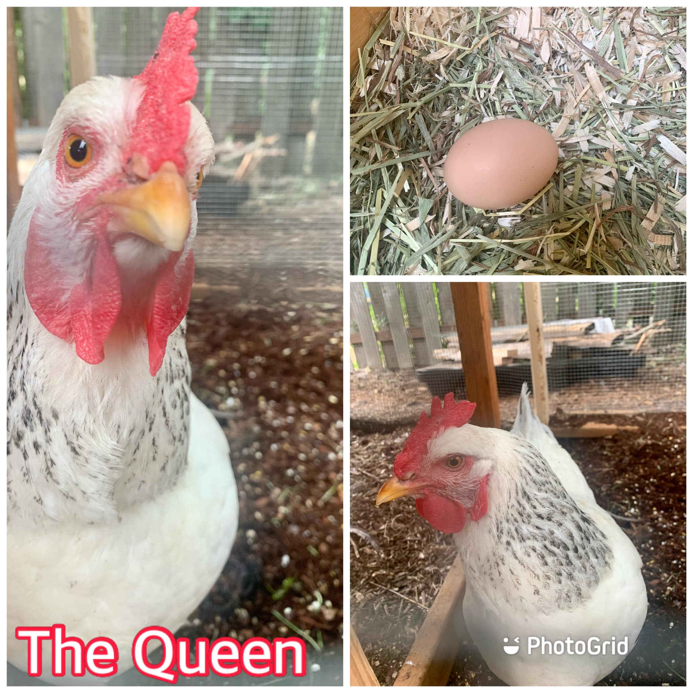
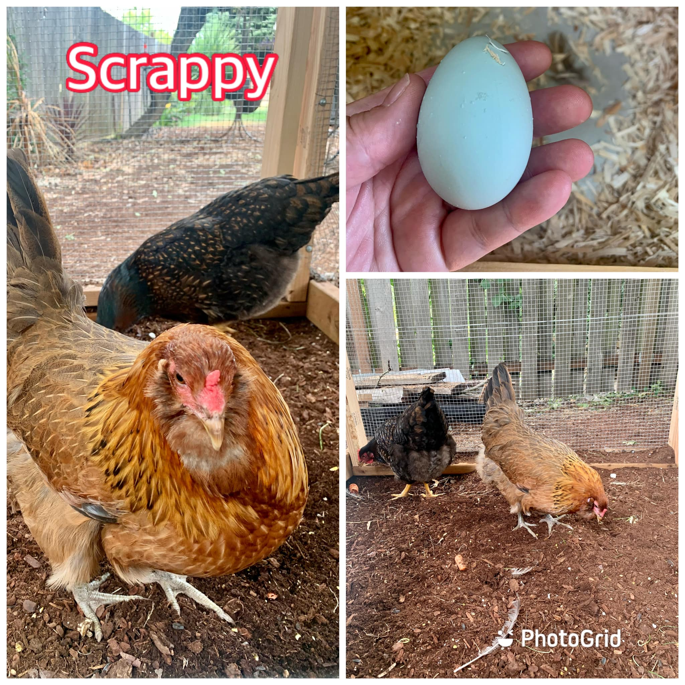
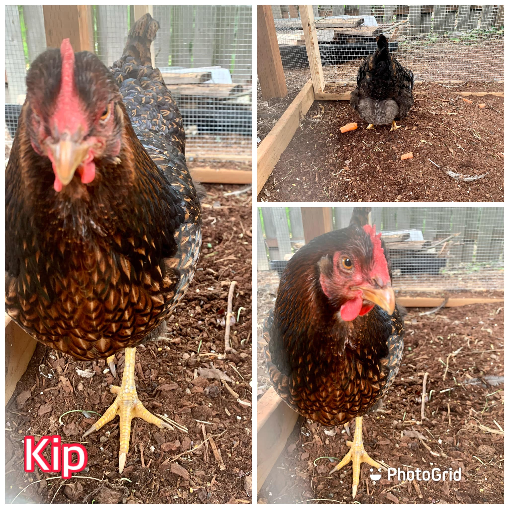
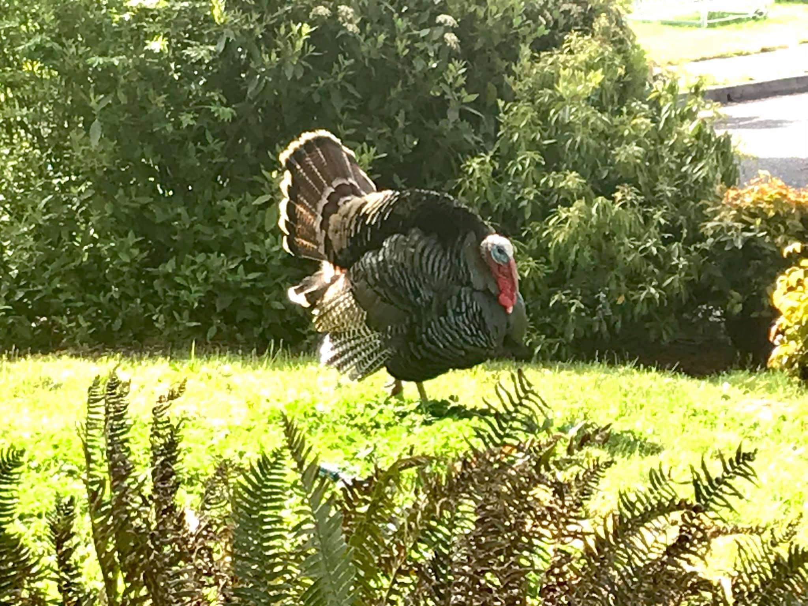

My Bio

A native Oregonian and lover of all things nature, my focus is on user-centric design principles that embody the path-of-least-resistance flow and visual appeal consistent with that of the natural world.
My Animals
When I’m not designing, I love to eat BBQ, refurbish furniture, rescue dogs, and find ways to caffeinate. This is my girl, Lucky. I rescued her from an animal shelter when she was a year old. She's been with me for 15 years ❤
 I also have backyard chickens and wild turkeys that frequently come by to drink from the sprinkler in my front yard, scratch around for food, and strut across the lawn, which I am pretty sure they think is a runway in their own personal fashion show.
     In addition to keeping backyard chickens rescuing dogs, and taking pictures of wild turkeys, I also love to cook! Check out my recipe website for some creative ideas.
Dream Project
As the daughter of a former child in foster care and someone who is in the early stages of adopting a child from the foster care system, I would relish the opportunity to create a space for children who are in or who have graduated from care to find access to community and educational resources. A place where they can easily navigate the data, find resources that will be specific to their dreams, and where they can find community leaders who are looking to match up with their skillsets.
About My Page
As a UX/UI graphic designer and HTML and CSS coder, I designed this site this site with responsive web design concepts in mind. This site is designed to provide a consistent user experience across multiple device platforms, including desktop/laptop, tablet, and mobile. In addition to this, the design of the site also designed for accessibility, meaning the site is designed to be accessible by site visitors who utilize common web browsing practices, such as a mouse, as well as site visitors who utilize alternate means of browsing, such as keyboard tabs. Lastly, the site is designed to be read visually via a standard monitor, or to utilize vision assisting software such as screen readers.